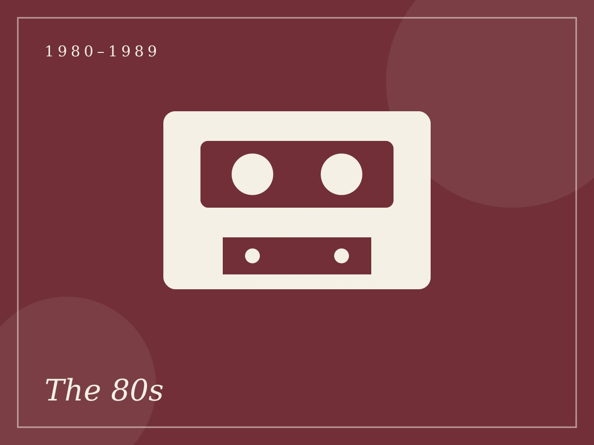
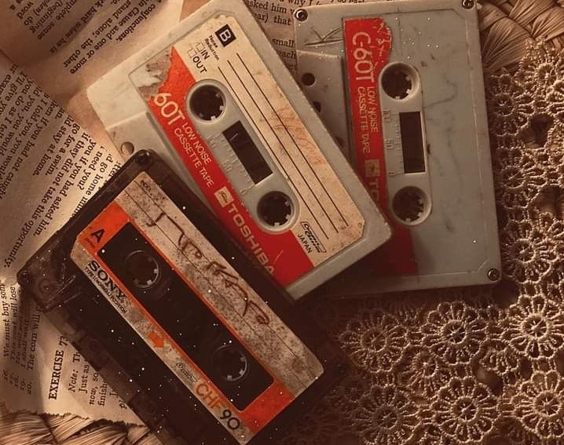
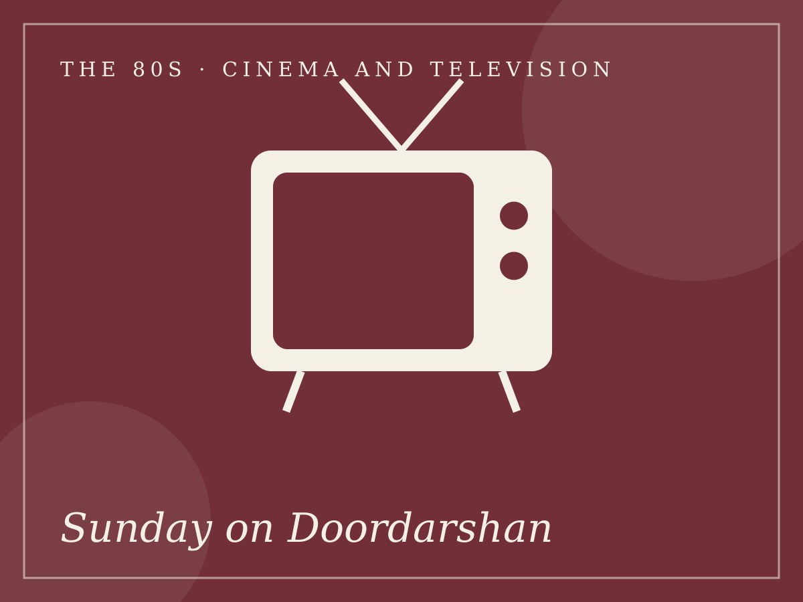
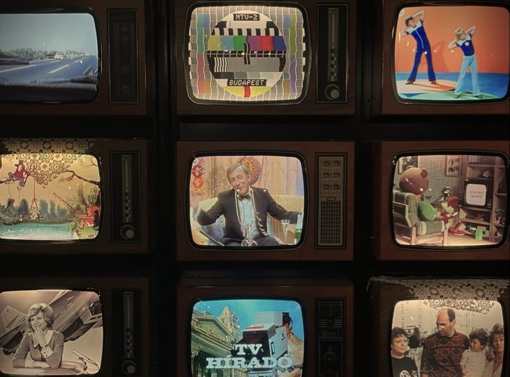
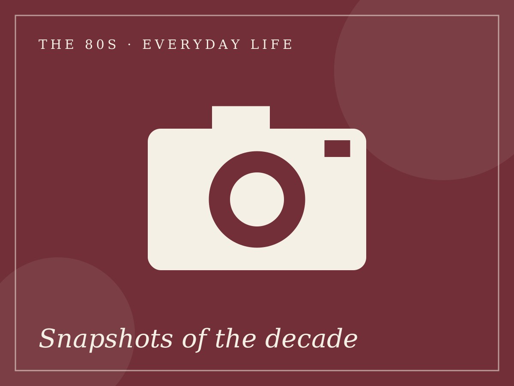

Chapter 02 of 04 ~ 1980-1989
The 80s
The Age of Boldness
Glitter, shoulder pads and a small screen that brought families together. In the eighties television arrived in living rooms, cassettes carried music everywhere, and a cricket win lit up the nation.

01 / 05
Music
The cassette boom
Cheap audio cassettes made music affordable and portable, helping film songs and devotional music reach many more listeners.
Disco comes to Bollywood
Disco Dancer (1982) and Bappi Lahiri's synth-heavy tunes put sequins and beats on the dance floor.

02 / 05
Cinema and Television
Ramayan and Mahabharat
Ramayan (1987-88) and Mahabharat (1988-90) drew huge family audiences, with streets going quiet at broadcast time.
Soaps and superheroes
Hum Log (1984) was an early Indian soap opera, and Mr. India (1987) brought the invisible hero to cinemas.
03 / 05
Fashion and Lifestyle
Sequins and shoulder pads
Glittering costumes and bright colours made film fashion loud, playful and unforgettable.
Big hair, bright colours
Teased hair and bold colours defined the film heroines and heroes of the decade.

04 / 05
Technology
Colour TV and Chitrahaar
Colour broadcasts arrived in 1982, in time for the Delhi Asian Games, and the weekly film-song show Chitrahaar became a ritual.
The VCR brings films home
Video cassette recorders let families watch films at home and rent tapes from local shops.

05 / 05
Everyday Life
Cricket World Cup, 1983
India's victory in 1983 was followed by thousands who gathered around radios and televisions.
One TV, many families
Watching shows together was a shared event and a reason to visit friends and neighbours.